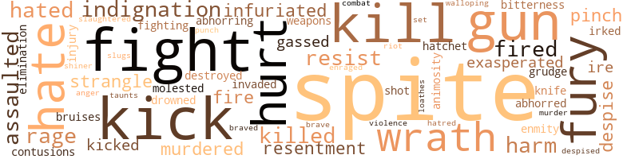
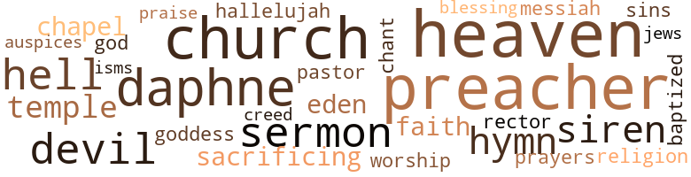

Volcano in Our Midst, by Joseph, Arthur (1952)
39 music-related terms matched in this text.
Most frequent terms in this topic: tune (4); singing (3); whistled (3); song (3); music (2)
chapter.n.01
Definition: a subdivision of a written work; usually numbered and titled
| word | sentence |
|---|---|
| chapter | All eyes were downcast modestly , while Joe read a chapter from the Bible . |
| chapter | Joe , having finished his chapter , started with prayers that seemed to Gloria as if they would never end . |
dance.v.03
Definition: skip, leap, or move up and down or sideways
| word | sentence |
|---|---|
| danced | The walls were all silver and adorned with black arabesques and in the middle there even was a little white fountain , whose waters gaily danced towards the ceiling . |
| dance | His fist hit the counter so hard that some bottles of tomato ketchup began to dance dangerously . |
hymn.n.01
Definition: a song of praise (to God or to a saint or to a nation)
| word | sentence |
|---|---|
| hymns | Their hymns drowned out all other expletives that he might hurl at the holy man . |
| hymns | The congregation began singing hymns and Bulleye was yawning , for it seemed indescribably dull to him , and he was yearning to get away . |
| hymn | The celebrated colored band leader King Sublime had been assaulted , because his orchestra had refused to play the Italian national hymn . |
jive.v.01
Definition: dance to jive music; dance the jive
| word | sentence |
|---|---|
| Jiving | She has heard you preaching and she says that if you wo n't marry us she 'll keep on Jiving in sin and bring an illiterate child into the world . " |
music.n.01
Definition: an artistic form of auditory communication incorporating instrumental or vocal tones in a structured and continuous manner
| word | sentence |
|---|---|
| music | These words were sweet music to Bulleye 's ears , for what is the use of being rich if no one knows it ? |
| music | But the trouble was that the old Italian had no money for new music , and he kept on grinding the old tune , though he made very little money with it . |
musical_instrument.n.01
Definition: any of various devices or contrivances that can be used to produce musical tones or sounds
| word | sentence |
|---|---|
| instrument | He began turning the handle and the weatherbeaten instrument gave vent to wail-ing , agonizing sounds , like a woman in childbirth . |
| instrument | The old Italian organ grinder was , as always , standing in front of the Lafayette Theatre , and his weather-beaten old instrument played a long-forgotten tune . |
phrase.n.02
Definition: a short musical passage
| word | sentence |
|---|---|
| phrases | He would visit the minister right now and take the bull by the horns , but Miss Nicholson , realizing that he was sometimes uncouth and inarticulate , coached him first in his phrases . |
pipe.n.04
Definition: a tubular wind instrument
| word | sentence |
|---|---|
| pipe | Bulleye grabbed a length of brass pipe , which stood in one corner for just such emergencies . |
| pipe | He found the reverend gentleman sitting in a rocking chair , turned out immaculately as always , smoking a short English pipe and enjoying a book . |
rap.n.05
Definition: genre of African-American music of the 1980s and 1990s in which rhyming lyrics are chanted to a musical accompaniment; several forms of rap have emerged
| word | sentence |
|---|---|
| rap | Salvatini , the lawyer , was a slick mouthpiece and with Mr. Alberoni and Harry Shapiro , who was assistant to the district leader , pulling the strings , it might be possible to beat the rap . |
| rap | It was also necessary to appoint a nominal head of the club who , in case of a raid or any other untoward accident , would take the rap . |
sing.v.02
Definition: produce tones with the voice
| word | sentence |
|---|---|
| Sing | He stammered pleadingly , " You would n't let me go to Sing Sing ? " |
| singing | The congregation began singing hymns and Bulleye was yawning , for it seemed indescribably dull to him , and he was yearning to get away . |
| sings | But , as the immortal bard sings , ' What fools these humans be ! ' |
singing.n.01
Definition: the act of singing vocal music
| word | sentence |
|---|---|
| singing | Love is just a sweet pain in the neck " A throng of loafers collected immediately , singing and humming the catchy tune . |
| singing | Soon everyone , men , women and children were dancing , enjoying themselves hugely and singing in unison . |
song.n.01
Definition: a short musical composition with words
| word | sentence |
|---|---|
| song | A song was in his heart and it found its way to his lips . |
| song | But as it is , the author is only a fifty-dollar-a-week song writer who , for once , had a happy inspiration . |
| Songs | Songs are the most perishable things on earth . |
| song | No one seemed to want to listen to the old song any more . |
| songs | It is a strange thing about songs . |
symphony.n.01
Definition: a long and complex sonata for symphony orchestra
| word | sentence |
|---|---|
| symphony | This time they formed a perfect symphony in brown . |
tone.v.01
Definition: utter monotonously and repetitively and rhythmically
| word | sentence |
|---|---|
| chant | But the latter , to forestall all that Bulleye might have to say , raised his hand and he and the three grave-diggers began to chant . |
tune.n.01
Definition: a succession of notes forming a distinctive sequence
| word | sentence |
|---|---|
| tune | Love is just a sweet pain in the neck " A throng of loafers collected immediately , singing and humming the catchy tune . |
| lines | It was entirely typewritten and read thus : " My dear Mr. Pope : A true friend of yours is sending you these lines . |
| tune | When Bulleye hummed the tune in the morning , he was not thinking of all these intricacies . |
| tune | The old Italian organ grinder was , as always , standing in front of the Lafayette Theatre , and his weather-beaten old instrument played a long-forgotten tune . |
| tune | But the trouble was that the old Italian had no money for new music , and he kept on grinding the old tune , though he made very little money with it . |
| line | White people were not in his line . |
whistle.v.01
Definition: make whistling sounds
| word | sentence |
|---|---|
| whistle | " I thinks I hear a police whistle , " he said . |
| whistled | The doctor , however , whistled through his teeth softly . |
| whistled | Mr. Fairweather whistled softly to show his admiration . |
| whistled | And while he was walking home gaily he whistled , " Love is just a s-w-e-e-t pain in the neck . " |
137 violence-related terms matched in this text.
Most frequent terms in this topic: spite (16); kick (6); fight (6); kill (5); fury (4)
abhor.v.01
Definition: find repugnant
| word | sentence |
|---|---|
| abhorring | He helped her into the car , for she was going shopping , while Bulleye himself , abhorring stuffy department stores , preferred to swagger up Broadway all by himself . |
| abhorred | Tomorrow , no doubt , he would have to look for work , as much as he abhorred the very idea of it . |
| loathes | The trouble with you is that you do n't know how to talk to a lady 'cause you has no education , and if there 's anything I loathes it 's a gent without no education . " |
anger.n.01
Definition: a strong emotion; a feeling that is oriented toward some real or supposed grievance
| word | sentence |
|---|---|
| ire | Instantly Bulleye 's ire abated . |
| ire | This apologetic speech did not appease the lady 's ire . |
| anger | Bulleye sneaked out , furious with anger and humiliation . |
animosity.n.01
Definition: a feeling of ill will arousing active hostility
| word | sentence |
|---|---|
| animosity | From this moment on , he began to dislike Gloria , and a great animosity against her was born in his heart . |
assail.v.01
Definition: attack someone physically or emotionally
| word | sentence |
|---|---|
| assaulted | The article set forth that the Reverend Dr. Merritt , a well-known Harlem evangelist , had been assaulted by some hoodlums late in the evening when going home through a side street . |
| assaulted | He had to pay the two hoodlums who assaulted the Reverend and also the two ladies of easy virtue whom he had planted in the hospital . |
| assaulted | The celebrated colored band leader King Sublime had been assaulted , because his orchestra had refused to play the Italian national hymn . |
battle.v.01
Definition: battle or contend against in or as if in a battle
| word | sentence |
|---|---|
| combat | A kindly editor informed him that the police department , har-rassed already , had now to combat a new scourge that was plaguing New York . |
bruise.n.01
Definition: an injury that doesn't break the skin but results in some discoloration
| word | sentence |
|---|---|
| bruises | Most of his teeth were knocked out , some ribs were broken and he had suffered all sorts of bruises and contusions . |
| contusions | Most of his teeth were knocked out , some ribs were broken and he had suffered all sorts of bruises and contusions . |
butcher.v.01
Definition: kill (animals) usually for food consumption
| word | sentence |
|---|---|
| slaughtered | He took his handkerchief out of his pocket and wiped the tears from the little brown face , for the kid was squeaking like a pig about to be slaughtered . |
contemn.v.01
Definition: look down on with disdain
| word | sentence |
|---|---|
| despise | Personally I despise money , but I have to live and there 's also a heavy mortgage on the church that has to be paid off . |
| despise | She did not despise them , however , as much as the members of her own sex . |
| despised | Being an intellectual , Mr. Shapiro despised dreams and all superstition in general . |
destroy.v.04
Definition: put (an animal) to death
| word | sentence |
|---|---|
| destroyed | " And thus , brethren , the Lawd rained hail and brimstone upon the cities of Sodom and Gomorrah and destroyed them . |
drown.v.04
Definition: kill by submerging in water
| word | sentence |
|---|---|
| drowned | Their hymns drowned out all other expletives that he might hurl at the holy man . |
elimination.n.05
Definition: the murder of a competitor
| word | sentence |
|---|---|
| elimination | It took lots of persuasion and a second bottle of rye to convince him that not Mr. Alberoni , but Bulleye was really his client , since he had given him the order for the Reverend Merritt 's elimination . |
enrage.v.01
Definition: put into a rage; make violently angry
| word | sentence |
|---|---|
| enraged | Questioned by the jealous Joyce Lane as to how he had acquired this adornment , he enraged her by acquainting her with the fact that he had passed the previous night in the arms of a beautiful heiress . |
fight.n.05
Definition: a boxing or wrestling match
| word | sentence |
|---|---|
| fight | I knows about all that because Mrs. Matthews left her and came fight over to me , and now I hope you 'll talk nicely about me to Mr. Alberoni . " |
| fight | The inhabitants of the neighboring houses had heard an argument about money and also witnessed the incipient fight . |
| fight | A three-cornered fight originated , conducted in hushed voices , for though Bulleye was not in the room , his shadow loomed large , and he might come out of the door any moment to crack the whip over their heads . |
fight.v.02
Definition: fight against or resist strongly
| word | sentence |
|---|---|
| fighting | He himself was n't active any more , for his body was riddled with bullets and in a battle with some fighting Irishman he had lost the use of one eye . |
| fight | She would fight back with all her power and she was now looking for an ally . |
| fight | Instead of attacking a woman , why do n't you come and fight me ! " |
| fight | If I had n't been prevented by a severe cold I would have gone overseas to fight . " |
fury.n.01
Definition: a feeling of intense anger
| word | sentence |
|---|---|
| fury | Bulleye was beside himself with fury . |
| fury | But Bulleye , beyond himself with fury , shouted , " You and the widow Budd and Mr. Holmes and all of you , go and jump in the toilet . |
| rage | She flew into a wild rage . |
| rage | The blonde Joyce 's eyes were filled with tears of rage and she said in a voice that she tried to render calm , but that was intermingled with sobs , " There you are again , shooting off your mouth . |
| fury | Its presence filled him with such fury that he gave it a violent kick . |
| rage | Bulleye gnashed his teeth with impotent rage . |
| fury | The stranger crossed the store , biting his little black moustache , his eyes blazing with fury , without paying any attention to Bulleye , who was sitting there reading a paper . |
gall.v.02
Definition: irritate or vex
| word | sentence |
|---|---|
| irked | He liked the house and even Gloria , who had made up her mind to find everything at fault even before she saw it , could n't help being impressed , though it irked her that it was just a house and not the house . |
gas.v.01
Definition: attack with gas; subject to gas fumes
| word | sentence |
|---|---|
| gassed | " I is been over there , " lied Bulleye , " and I is been badly gassed . " |
| gassed | " Badly gassed ? |
grudge.n.01
Definition: a resentment strong enough to justify retaliation
| word | sentence |
|---|---|
| grudge | He also had a grudge against Dr. Clark because the latter was a reformer . |
gun.n.01
Definition: a weapon that discharges a missile at high velocity (especially from a metal tube or barrel)
| word | sentence |
|---|---|
| gun | Your ways looks kind of superstitious to me ; maybe you 's got a gun . " |
| guns | They had big heaps of number slips before them and their adding machines rattled and clattered like machine guns in action . |
| guns | At first he was extremely reluctant to turn his guns against Mr. Alberoni . |
| guns | Their typewriters that always rattled like machine guns in action , clicked now at long intervals , as if to save ammunition . |
| gun | He also mentioned the fact that Bulleye had a gun with him and the detective , experienced in such matters , assured him that he would do his best to avoid violence . |
hate.n.01
Definition: the emotion of intense dislike; a feeling of dislike so strong that it demands action
| word | sentence |
|---|---|
| hatred | When he made no effort to move , she went very close to him and hissed in a voice that was full of hatred , " Get the hell out , you . . . " She stemmed her powerful shoulders against him and with one mighty push , she sent him reeling out of the room . |
| hate | And Gloria to him was neither an object of love or hate . |
hate.v.01
Definition: dislike intensely; feel antipathy or aversion towards
| word | sentence |
|---|---|
| hate | I hate you ! |
| hate | I hate you . " |
| hated | He remembered that Gloria had told him that she hated him . |
| hated | Robust and masculine as she was , she hated Mr. Fairweather who was effeminate , wore tight-fitting suits and boasted that he could have any woman he wanted . |
| hate | He had read in the papers that husbands in such cases killed their wives , but he would not kill Gloria , for to kill a woman , you must either love or hate her . |
| hated | He hated to think of the girl who had scrammed with his dough , and the other jane who had snubbed him in the Alligator Pear . |
hostility.n.02
Definition: a state of deep-seated ill-will
| word | sentence |
|---|---|
| enmity | He saw with disgust that it was the gentleman from Pete 's restaurant who had paid for his coconut custard cake , thereby incurring his eternal enmity . |
hurt.v.04
Definition: cause damage or affect negatively
| word | sentence |
|---|---|
| hurt | Should they be hurt accidentally , I would feel sorry but I would be willing to pay the doctor bills . |
indignation.n.01
Definition: a feeling of righteous anger
| word | sentence |
|---|---|
| indignation | Bulleye , emphatically and with indignation , declined to entertain either one of these suggestions , and they had parted company in complete disagreement . |
| indignation | Bulleye shrieked with indignation , and long negotiations became necessary . |
| indignation | Ve vill kick 'em out of office and the indignation of an infuriated people vill chase them into the abyss of oblivion ! |
infuriate.v.01
Definition: make furious
| word | sentence |
|---|---|
| infuriated | Bulleye was too infuriated to be very much impressed . |
| exasperated | This inane answer exasperated the counsellor . |
| exasperated | The supposition that Mr. Fairweather could scare Bulleye was really too funny , but the mocking attitude of the audience exasperated him to such a degree that he roared , " If you knew what I know you would n't laugh so stupidly . |
| infuriated | Ve vill kick 'em out of office and the indignation of an infuriated people vill chase them into the abyss of oblivion ! |
injury.n.01
Definition: any physical damage to the body caused by violence or accident or fracture etc.
| word | sentence |
|---|---|
| injury | Not satisfied with hurling invectives at her , they added injury to insult by pouring a pail of mortar on her , thereby putting her to heavy expense . |
| harm | He had abandoned the idea of a divorce - at least for the time being - since Mr. Salvatini had warned him that it might make a bad impression in the community and harm him in business . |
| harm | You know , when the bulls came in here and turned everything topsy turvy , I remembered that this picture stood on the dresser and before they noticed it I stuck it in my pocket , because she was a very nice young lady and very pretty , too , and I did n't want any harm to come to her . " |
| harm | " I did n't mean no harm , honey . |
invade.v.01
Definition: march aggressively into another's territory by military force for the purposes of conquest and occupation
| word | sentence |
|---|---|
| invaded | The Bronx , Brooklyn , and Jersey City were invaded . |
kick_back.v.02
Definition: spring back, as from a forceful thrust
| word | sentence |
|---|---|
| kick | " Yeah , but the rent is due today and Nevada Jenkins would sure kick me out if I does n't come across , which I cai n't . " |
| kick | He takes a chair and hits him on the bean so hard that the croaker in the hospital says that Mr. Ramirez is goin ' to kick the bucket . " |
| kick | But the big shot he slaps me on the shoulder and says , ' Gorilla , ' says he , ' I respects you very much , 'cause there ai n't no better man to kick a guy in the pants or punch him in the snoot than you , but I ca n't give you the job 'cause otherwise you is as dumb as a horse . ' " |
| kick | The Brooklyn business suddenly took a terrible nose dive and Bulleye wanted to kick Mr. Fairweather out immediately . |
| kicked | He kicked the two gentlemen into the street and locked the door behind him . |
| kick | If I do n't pay by tomorrow morning she 'll kick me out . " |
| kick | There was also the possibility of giving her less money for booze , but in that case she would kick up a row as she had done before , yelling for alcohol so that the entire neighborhood would be in an uproar . |
| kicked | He could have kicked himself for not having thought of the place before , for his harvest of cigarettes was bigger than ever . |
kill.v.10
Definition: cause the death of, without intention
| word | sentence |
|---|---|
| killed | You 've killed the poor innocent lamb , you 've murdered him with your greed . " |
| killed | He did n't care if those two Negroes killed each other . |
| killed | He had read in the papers that husbands in such cases killed their wives , but he would not kill Gloria , for to kill a woman , you must either love or hate her . |
| kill | He had read in the papers that husbands in such cases killed their wives , but he would not kill Gloria , for to kill a woman , you must either love or hate her . |
| kill | He had read in the papers that husbands in such cases killed their wives , but he would not kill Gloria , for to kill a woman , you must either love or hate her . |
| kill | And that you would come here and kill us all . |
| kill | Bulleye yelled , " Oh , yes , you do , you old cow , and I 'm going to kill you if you do n't tell me . " |
| kill | She answered eagerly , " Gosh , a sandwich and a glass of milk would n't kill me . " |
knife.n.02
Definition: a weapon with a handle and blade with a sharp point
| word | sentence |
|---|---|
| knife | Once in a while he would Cut a little piece , and conduct it to his mouth , holding knife and fork in well-manicured fingers . |
malice.n.01
Definition: feeling a need to see others suffer
| word | sentence |
|---|---|
| spite | Gloria thought that the gentleman was very distinguished and nice , in spite of his frequent coughing and peg leg . |
| spite | They , too , were dressed in black in spite of the heat , and as their complexions were very dark also , they looked as lugubrious as grave-diggers . |
| spite | In spite of the high-sounding name , it was nothing but a small store , with a large show window to the street . |
| spite | She did it out of spite . |
| spite | Being a little snooty , she also resented the fact that in spite of their money they had been rebuffed by society . |
| spite | Everything seemed different , however , for while Mr. Alberoni , in spite of his aweinspiring manners , had been easy-going , Bulleye proved to be a hard task-master . |
| spite | Before going to bed , he went into Gloria 's room , for he had ordered the door open at all times , in spite of her protests . |
| spite | In spite of the late hour , some colored children were still playing . |
| spite | For , if it were , and we mean no disrespect to our judiciary , our honorable judges , in spite of their alertness and sagacity , might not be able to cope with the situation . |
| spite | Bulleye had never sent her a messenger before and in spite of all the booze that she consumed , she was still pretty cagey . |
| spite | In spite of the rain , some homeless bums were hanging around , for there was no policeman in the neighborhood . |
| spite | The girl sat down next to him , in spite of the rain . |
| spite | In spite of the early hour , a crowd of loafers was hanging around the bar at the Alligator Pear when Bulleye entered . |
| spite | In spite of this , Mr. Troplo-witz had the unbelievable crust to ask three dollars ' fifty for this garment . |
| spite | It was not necessary to ask him what number he was going to play , for it was always the same , 401 , his house number , which he considered lucky , since his business was flourishing in spite of the chain stores . |
| spite | Bulleye concluded that Mr. Epstein , in spite of his gray beard and his dignified manner , was only small potatoes in the number racket . |
molest.v.01
Definition: harass or assault sexually; make indecent advances to
| word | sentence |
|---|---|
| molested | " Ai n't you the guy who molested a woman this afternoon in front of the Alligator Pear ? " |
murder.n.01
Definition: unlawful premeditated killing of a human being by a human being
| word | sentence |
|---|---|
| murder | They 'll also bring you perfumed letters that are full of poison and nearly cause a man to murder his woman . |
murder.v.01
Definition: kill intentionally and with premeditation
| word | sentence |
|---|---|
| murdered | You 've killed the poor innocent lamb , you 've murdered him with your greed . " |
| murdered | If it had n't been for that German fellow he would have murdered a man and maybe a woman too , and he might have gone to the electric chair for it . |
open_fire.v.01
Definition: start firing a weapon
| word | sentence |
|---|---|
| fire | " Is yoh goin ' to fire him ? " |
| fire | But she recovered after a second and hollered , " One more peep out of you , you ungrateful brat , and I 'll fire you ! |
| fired | He was glad to see that Pete had fired Allen Johnston , the waiter , because he had been impudent to those who did n't tip him generously . |
| fired | If he does n't make twice as much next week , he 's fired . |
| fired | My employer fired me , but he gave me one month 's wages , and my girl gave me something , too - the gate . " |
pain.v.02
Definition: cause emotional anguish or make miserable
| word | sentence |
|---|---|
| hurt | You hurt me . |
| hurt | Tell her that I wo n't hurt her and if she does n't want to come , it 's just the same , but bring the kid back . |
| hurt | " You hurt me , " she said plaintively . |
pinch.n.02
Definition: an injury resulting from getting some body part squeezed
| word | sentence |
|---|---|
| pinch | At a pinch he could spend another dime and ride the subway up and down for some hours . |
| pinch | As the possibility of this is exactly nine hundred to one , it was n't much of a risk at that , and in a pinch he would well be able to pay . |
punch.n.01
Definition: (boxing) a blow with the fist
| word | sentence |
|---|---|
| punch | Gorilla Haines would have loved to answer to his taunts with a punch in the nose . |
| slugs | His new friend drew nearer to him and whispered , " I am making slugs . " |
resentment.n.01
Definition: a feeling of deep and bitter anger and ill-will
| word | sentence |
|---|---|
| resentment | Instantly , he felt a great resentment and without any delay he changed the text of his sermon from the Garden of Eden to the Great Whore of Babylon . |
| bitterness | Bulleye got up , his heart full of bitterness and resentment . |
| resentment | Bulleye got up , his heart full of bitterness and resentment . |
resist.v.04
Definition: withstand the force of something
| word | sentence |
|---|---|
| resist | Bulleye found it increasingly difficult to resist her , for she was really a ravishing siren . |
| resist | There were very few judges who were hard-boiled enough to resist him . |
| resist | Bulleye , not being able to resist temptation , tried the suit on . |
riot.n.01
Definition: a public act of violence by an unruly mob
| word | sentence |
|---|---|
| riot | This probably was a souvenir of the riot in front of Pirelli 's restaurant . |
shiner.n.01
Definition: a swollen bruise caused by a blow to the eye
| word | sentence |
|---|---|
| shiner | The sole reward he reaped , he exhibited the next day in the office in the shape of a badly discolored right eye , more commonly known as a shiner . |
shoot.v.02
Definition: kill by firing a missile
| word | sentence |
|---|---|
| shot | Mr. Salvatini asked him jokingly how it felt to be a prospective nephew of Uncle Sam , but Bulleye was thinking of the money that he might have lost while he was downtown and only shot him a vindictive glance . |
sic.v.01
Definition: urge to attack someone
| word | sentence |
|---|---|
| set | Miss Reid , however , had her heart set on this artistic development . |
strangle.v.01
Definition: kill by squeezing the throat of so as to cut off the air
| word | sentence |
|---|---|
| strangle | He may also have many enemies who may shoot him , strangle him , poison him - what do I know ? |
| strangle | He took a panther-like plunge at the girl , grabbed her by the throat and began to strangle her . |
thrashing.n.01
Definition: a sound defeat
| word | sentence |
|---|---|
| walloping | Instead of complying with this demand , Bulleye had grabbed the other 's nightstick and administered a terrible walloping . |
tomahawk.n.01
Definition: weapon consisting of a fighting ax; used by North American Indians
| word | sentence |
|---|---|
| hatchet | She did not seem ready to bury the hatchet . |
twit.n.02
Definition: aggravation by deriding or mocking or criticizing
| word | sentence |
|---|---|
| taunts | Gorilla Haines would have loved to answer to his taunts with a punch in the nose . |
violence.n.01
Definition: an act of aggression (as one against a person who resists)
| word | sentence |
|---|---|
| violence | He also mentioned the fact that Bulleye had a gun with him and the detective , experienced in such matters , assured him that he would do his best to avoid violence . |
weapon.n.01
Definition: any instrument or instrumentality used in fighting or hunting
| word | sentence |
|---|---|
| weapons | To his disappointment , Bulleye carried no weapons . |
weather.v.01
Definition: face and withstand with courage
| word | sentence |
|---|---|
| braved | Miss Deborah Reid braved them courageously . |
| brave | She endeavored , however , to be brave and in a voice that was a little shaky , she challenged him , " So what ? " |
wrath.n.01
Definition: intense anger (usually on an epic scale)
| word | sentence |
|---|---|
| wrath | I do not warn them of the wrath of the Lord , for they are mockers and unbelievers . |
| wrath | He was so filled with wrath that he beat her desk with his fist , yelling , " The dirty dog has double-crossed me ! |
| wrath | He went homeward , unafraid of Nevada Jenkins and of the wrath of her husband , him of the Herculean build , since he had the honest intention of paying his rent , as any decent , law-abiding citizen should . |
79 religion-related terms matched in this text.
Most frequent terms in this topic: church (8); preacher (8); Daphne (6); heaven (6); hell (4)
augur.n.01
Definition: (ancient Rome) a religious official who interpreted omens to guide public policy
| word | sentence |
|---|---|
| auspices | Notwithstanding the happy future that was in store for Peter Pope the Second , he was not born under lucky auspices . |
baptize.v.01
Definition: administer baptism to
| word | sentence |
|---|---|
| baptized | The youngster was baptized Peter Isaac Pope ; Isaac for Gloria 's father who had been a little tailor over in Jersey , a decent fellow , but dead these ten years . |
blessing.n.05
Definition: the act of praying for divine protection
| word | sentence |
|---|---|
| blessing | It turned out to be the well-known cloud with the silver lining - or the blessing in disguise that the preachers refer to so fondly . |
chapel.n.01
Definition: a place of worship that has its own altar
| word | sentence |
|---|---|
| chapel | It was merely a two-story house whose main floor had been converted into a chapel , while the minister 's living quarters were on the first floor . |
| chapel | He had expected to be all alone and was surprised to find the chapel filled to capacity with the Reverend 's followers . |
church.n.02
Definition: a place for public (especially Christian) worship
| word | sentence |
|---|---|
| church | The Reverend Doctor Merritt 's church was no imposing edifice with spires , belfry and stained-glass windows . |
| church | There can be no doubt that the good Lord in Heaven looks down with the same favor upon these faithful and simple souls as upon the more up-to-date congregations in many a fashionable downtown church . |
| church | There was such silence in the church that one could have heard a leaf falling . |
| church | He grabbed Gloria 's hand and dragged her out of the church . |
| church | He was an extremely straight-laced and God-fearing man and a deacon and pillar of the small , local , colored church . |
| church | The first serious trouble started when she moodily refused to go to church on Sunday . |
| church | And now again , one of those elegant , beautiful Harlem ladies would be a visitor to his church . |
church.n.04
Definition: the body of people who attend or belong to a particular local church
| word | sentence |
|---|---|
| church | Personally I despise money , but I have to live and there 's also a heavy mortgage on the church that has to be paid off . |
creed.n.01
Definition: any system of principles or beliefs
| word | sentence |
|---|---|
| creed | He addressed him now very personally , saying that in this country there is no discrimination because of race , creed or color . |
curate.n.01
Definition: a person authorized to conduct religious worship
| word | sentence |
|---|---|
| pastor | Three elderly spinsters , members of his congregation , went to the hospital to visit their beloved pastor . |
| Rector | These half-forgotten thoroughfares are reminders of the days when Rector 's and Mouquin 's were the best eating places in the city and Delmonico 's was a word to conjure with . |
daphne.n.02
Definition: (Greek mythology) a nymph who was transformed into a laurel tree to escape the amorous Apollo
| word | sentence |
|---|---|
| Daphne | The door opened and Daphne walked out , still in tears , closely followed by Miss Reed herself . |
| Daphne | He parked his car in a side street and hung around the Lilac Beauty Shoppe until about one o'clock when he saw Daphne coming out . |
| Daphne | He was not particularly interested in Daphne any more . |
| Daphne | Daphne looked at him longingly out of the corner of her eye , hoping for another drink and a ride in the Packard that would never materialize . |
| Daphne | She would leave the key for the store with Daphne . |
| Daphne | She had Daphne call a few minutes later , but the secretary bellowed the same answer at her . |
doctrine.n.01
Definition: a belief (or system of beliefs) accepted as authoritative by some group or school
| word | sentence |
|---|---|
| isms | This country , he said , was the greatest democracy on earth and a firm bulwark against fascism , communism and all other foreign isms . |
eden.n.01
Definition: any place of complete bliss and delight and peace
| word | sentence |
|---|---|
| heaven | Imagine , a fat old horse like her in a blue heaven ! |
| Heaven | There can be no doubt that the good Lord in Heaven looks down with the same favor upon these faithful and simple souls as upon the more up-to-date congregations in many a fashionable downtown church . |
| Heaven | The preacher raised his hand and shouted , " Glory be the Lord in Heaven . " |
| Eden | The clergyman enthusiastically overhauled and polished one of his most efficient sermons dealing with the Garden of Eden . |
| Eden | Instantly , he felt a great resentment and without any delay he changed the text of his sermon from the Garden of Eden to the Great Whore of Babylon . |
| heaven | She looked around from one to the other , and when she saw those six little black cherubs looking solemn , she was suddenly reminded of the Green Pastures , Mr. Deshee 's Sunday School and the fish fry in heaven . |
| Heaven | He trumpeted , " For Heaven 's sake , open the windows . |
| Heaven | Mr. McCarthy said timidly , " For Heaven 's sake , Mr. Pope , calm yourself . |
| heaven | Also , the conditions in some of the hospitals stunk to heaven . |
| heaven | They now swarmed all over the place , plying their trade and promising their customers the joys of heaven for the measly rates of twenty-five cents to half a buck . |
| heaven | And heaven knows if Mr. Fairweather would n't have weakened if , at that moment , Miss Nicholson had n't entered , attracted by the noise . |
| heaven | But for heaven 's sake , be careful . |
god.n.03
Definition: a man of such superior qualities that he seems like a deity to other people
| word | sentence |
|---|---|
| God | God knows where he has stolen the new car . |
goddess.n.01
Definition: a female deity
| word | sentence |
|---|---|
| Goddess | This emporium , dingy as it was , represented to him the temple of the Goddess Fortuna . |
hallelujah.n.01
Definition: a shout or song of praise to God
| word | sentence |
|---|---|
| hallelujah | And hallelujah ! |
hell.n.01
Definition: any place of pain and turmoil
| word | sentence |
|---|---|
| hell | He went out , cursing aloud and vowing that he would put Bulleye behind the iron bars yet , if he had to fry in hell for it . |
| hell | What the hell was the matter with Gloria ? |
| hell | It stinks like hell in here ! " |
| hell | What the hell was the matter with me that I married you ? |
hymn.n.01
Definition: a song of praise (to God or to a saint or to a nation)
| word | sentence |
|---|---|
| hymns | Their hymns drowned out all other expletives that he might hurl at the holy man . |
| hymns | The congregation began singing hymns and Bulleye was yawning , for it seemed indescribably dull to him , and he was yearning to get away . |
| hymn | The celebrated colored band leader King Sublime had been assaulted , because his orchestra had refused to play the Italian national hymn . |
jew.n.01
Definition: a person belonging to the worldwide group claiming descent from Jacob (or converted to it) and connected by cultural or religious ties
| word | sentence |
|---|---|
| Jews | Mr. Thompson was very light-skinned - so much so that he could pass for a white man , which was useful in the Bronx where practically all the gamblers were either Jews or Italians . |
messiah.n.03
Definition: the awaited king of the Jews; the promised and expected deliverer of the Jewish people
| word | sentence |
|---|---|
| Messiah | The doctor had now quite a congregation around him who looked upon him as a kind of a Messiah . |
praise.n.02
Definition: offering words of homage as an act of worship
| word | sentence |
|---|---|
| praise | Bulleye took this as praise and tribute to his industriousness and was very much flattered . |
prayer.n.01
Definition: the act of communicating with a deity (especially as a petition or in adoration or contrition or thanksgiving)
| word | sentence |
|---|---|
| prayers | Joe , having finished his chapter , started with prayers that seemed to Gloria as if they would never end . |
preacher.n.01
Definition: someone whose occupation is preaching the gospel
| word | sentence |
|---|---|
| preacher | The preacher was just ending his speech , and his voice came sonorously out of the hollow of his chest . |
| preacher | The crowd began to murmur , some taking Bulleye 's part , others siding with the preacher . |
| preacher | Some enterprising preacher gathers a little congregation around him and sets up his own house of worship . |
| preacher | The preacher was surprised . |
| preacher | The preacher continued , " I turned the money over to our treasurer , Brother Saunders , and it will help to pay the mortgage that is on our house . " |
| preacher | The preacher raised his hand and shouted , " Glory be the Lord in Heaven . " |
| preacher | Alberoni was not a lousy tobacconist like Mr. Epstein - or an insignificant little preacher like Dr. Merritt . |
| preachers | It turned out to be the well-known cloud with the silver lining - or the blessing in disguise that the preachers refer to so fondly . |
| preacher | This here son of his would be a lawyer , a doctor or even a preacher , though Bull-eye did not approve much of the latter profession . |
religion.n.01
Definition: a strong belief in a supernatural power or powers that control human destiny
| word | sentence |
|---|---|
| faith | Dr. Merritt was a little flattered by so much faith . |
| faith | The sale had been made in good faith and was in order , the blue prints had been approved by the building department and the construction would go on as planned . |
religion.n.02
Definition: an institution to express belief in a divine power
| word | sentence |
|---|---|
| Religion | Religion was very much outside of his province , and his knowledge of it extremely limited . |
sacrifice.v.04
Definition: make a sacrifice of; in religious rituals
| word | sentence |
|---|---|
| sacrificing | Bulleye knew that a slice of it would cost a dime , and he figured that by denying the waiter his tip and by sacrificing tomorrow 's breakfast , he , too , could buy one . |
| sacrificing | He was not called Hiram as had been intended , for it was too long ago that Mr. Yates had jumped out of the window , sacrificing his own life for his friends . |
satan.n.01
Definition: (Judeo-Christian and Islamic religions) chief spirit of evil and adversary of God; tempter of mankind; master of Hell
| word | sentence |
|---|---|
| devil | " As far as I is concerned you can go to the devil . " |
| devils | Not having any business in Harlem , he had , like many white people , been of the opinion that all Negroes are poor devils , eking out a precarious living as elevator operators or as redcaps in Pennsylvania Station , while the female of the species was at best a cook or a nurse maid . |
| devil | As your friend I sympathize with you , because when I was your age I was a devil with the women myself . " |
| devil | But what the devil has that got to do with you ? " |
sermon.n.02
Definition: a moralistic rebuke
| word | sentence |
|---|---|
| sermon | The Reverend , however , began preaching a sermon . |
| sermons | The clergyman enthusiastically overhauled and polished one of his most efficient sermons dealing with the Garden of Eden . |
| sermon | Instantly , he felt a great resentment and without any delay he changed the text of his sermon from the Garden of Eden to the Great Whore of Babylon . |
| sermon | He was just going to start a sermon when he noticed that Mr. Pope looked extremely strange this morning . |
sin.n.06
Definition: violent and excited activity
| word | sentence |
|---|---|
| sins | " There are amongst us those who will not repent , but wallow in their sins like swine in the dirt . |
siren.n.01
Definition: a sea nymph (part woman and part bird) supposed to lure sailors to destruction on the rocks where the nymphs lived
| word | sentence |
|---|---|
| siren | Bulleye found it increasingly difficult to resist her , for she was really a ravishing siren . |
| siren | An ambulance came from that direction , its siren howling , escorted by two motorcycle cops . |
| sirens | Ambulances with shrieking sirens appeared . |
temple.n.03
Definition: an edifice devoted to special or exalted purposes
| word | sentence |
|---|---|
| temples | His temples were beating and his insides burning . |
| temple | This emporium , dingy as it was , represented to him the temple of the Goddess Fortuna . |
tone.v.01
Definition: utter monotonously and repetitively and rhythmically
| word | sentence |
|---|---|
| chant | But the latter , to forestall all that Bulleye might have to say , raised his hand and he and the three grave-diggers began to chant . |
worship.n.01
Definition: the activity of worshipping
| word | sentence |
|---|---|
| worship | Some enterprising preacher gathers a little congregation around him and sets up his own house of worship . |